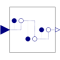
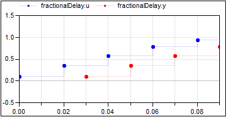

FractionalDelayDelay the clocked input signal for a fractional multiple of the sample period |

|
Information
This information is part of the Modelica Standard Library maintained by the Modelica Association.
This block delays a signal. Similar to the ShiftSample block the first activation of the clock of the output y is delayed by shiftCounter/resolution*interval(u) relative to the input u (interval(u) is the sample period of the clock associated to input u). However, in contrast to ShiftSample, the block provides a buffer for the input values and truly delays the input signal.
Example
The following
example
shows how a sample sine signal is delayed.
 |
 | |
| model | simulation result |
The parameter values shiftCounter=3 and resolution=2 are visible at the bottom of the fractionalDelay block.
Parameters (2)
| shift |
Value: 0 Type: Integer Description: Delay = interval() * shift/resolution |
|---|---|
| resolution |
Value: 1 Type: Integer Description: Time quantization resolution of sample interval |
Connectors (2)
| u |
Type: RealInput Description: Connector of clocked, Real input signal |
|
|---|---|---|
| y |
Type: RealOutput Description: Connector of clocked, Real output signal |
Used in Examples (1)
|
Modelica.Clocked.Examples.Elementary.RealSignals Example of a FractionalDelay block for Real signals |
Used in Components (1)
|
Modelica.Clocked.Examples.Systems.Utilities.ComponentsThrottleControl Accounts for the induction-to-power stroke lag. |